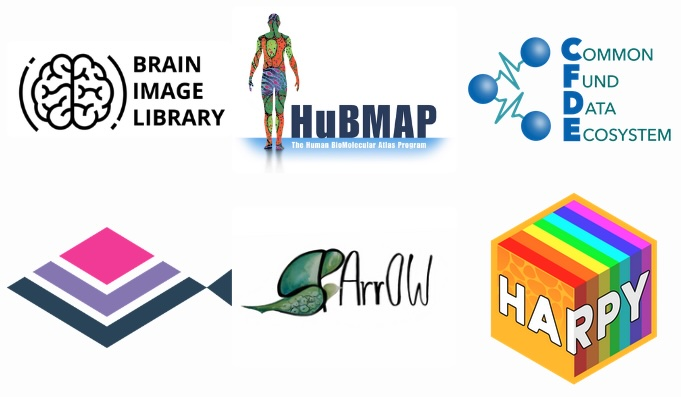

<div class="container my-5">
<div class="content-card">
<div class="markdown-body container-fluid comment-enabled" data-hard-breaks="true" id="doc" lang="en-US"><h1 data-id="Spatial-Transcriptomics-Workshop" id="Spatial-Transcriptomics-Workshop"><span>Spatial Omics Workshop</span></h1>
<h4 data-id="May-12-16th-2025" id="May-12-16th-2025"><span>May 12-16th, 2025</span></h4>
<h4 data-id="Online" id="Online"><span>Online</span></h4>
<p><div style="text-align: center;"></div></p>
<h2 data-id="General-Information" id="General-Information"><span>General Information</span></h2><p>
<span>The <a href="https://www.brainimagelibrary.org/" rel="noopener" target="_blank"><span>Brain Image Library (BIL)</span></a>, <a href="https://portal.hubmapconsortium.org/" rel="noopener" target="_blank"><span>Human BioMolecular Atlas Program (HuBMAP)</span></a>, <a href="https://info.cfde.cloud/" rel="noopener" target="_blank"><span>Common Fund Data Ecosystem (CFDE)</span></a>, <a href="http://giottosuite.com/" rel="noopener" target="_blank"><span>Giotto</span></a>, <a href="https://sparrow-pipeline.readthedocs.io/" rel="noopener" target="_blank"><span>SPArrOW</span></a> and <a href="https://harpy.readthedocs.io/" rel="noopener" target="_blank"><span>Harpy</span></a> teams will be holding a Spatial Omics workshop on May 12-16th, 2025.  This virtual hands-on workshop will introduce participants to spatial omics technologies and introduce participants to the Giotto,  Sparrow and Harpy tools.  Participants will use Pittsburgh Supercomputing Center’s High Performance Computing System to explore real-world spatial expression data generated by the BRAIN Initiative and HuBMAP projects, complete hands-on exercises, and discuss problems of interest. Participants are also welcome to bring their own spatial data to explore.</span></p>
<p><strong><a href="https://forms.gle/u1YvU3FcZ4WrCL497" rel="noopener" target="_blank"><span>Registration Link</span></a></strong></p>
<span><strong>Registration Deadline:</strong> May 1st</span><p></p><p><strong><span>Who:</span></strong><span> This workshop is aimed at researchers of all levels interested in spatial omics tools. </span><strong><span>You don't need to have any previous knowledge of the tools that will be presented at the workshop</span></strong></p><p><strong><span>Where:</span></strong><span> This workshop will take place online.</span></p><p><strong><span>When:</span></strong><span> May 12-16th, 2025, Time TDB</span></p>
<p><strong><span>Requirements:</span></strong><span> All participants must have access to a computer with a Mac, Linux, or Windows operating system. The workshops will utilize HPC resources that all participants will gain access to provided by the Brain Image Library and HuBMAP Projects.</span></p>
<p><span>Please contact <a href="mailto:amcwilliams@psc.edu ">amcwilliams@psc.edu </a> with any questions.</span>
<h2 data-id="Funding-and-Sponsors" id="Funding-and-Sponsors"><span>Funding and Sponsors</span></h2><p><span>This workshop is sponsored by the Common Fund Data Ecosystem (CFDE) under award number OT2OD030545. The Brain Image Library is supported by the National Institutes of Health under award number R24MH114793. The Human BioMolecular Atlas Program is supported by the National Institutes of Health under award number OT2OD033759. Giotto is supported by the Chan Zuckerberg Initiative’s (CZI) Essential Open Source Software for Science (EOSS) Program (2022-252544), the Alex’s Lemonade Stand Foundation (ALSF) for Childhood Cancer, and by the National Institutes of Health under award numbers RF1MH133703 and RF1MH128970. SPArrOW is supported by The Research Foundation-Flanders under award number 11J7324N. Harpy is supported by the Flanders AI Research Program.</span></p>
<h2 data-id="Schedule" id="Schedule"><span>Schedule</span></h2>
<h4 data-id="Day-1" id="Day-1"><span>Day 1</span></h4>
<p><em><span>May 12th, 2025</span></em><br/>
<span>Introduction to spatial omics technologies, accessing spatial omics data, and computational platforms at the Brain Image Library and HuBMAP.</span></p>
<h4 data-id="Day-2" id="Day-2"><span>Day 2</span></h4>
<p><em><span>May 13th, 2025</span></em><br/>
<span>Introduction to Giotto and working with MERFISH data.</span></p>
<h4 data-id="Day-3" id="Day-3"><span>Day 3</span></h4><p><em><span>May 14th, 2025</span></em><br/>
<span>Giotto with multi-modal spatial omics data (Phenocycler and Xenium) and downstream spatial analysis.</span></p>
<h4 data-id="Day-4" id="Day-4"><span>Day 4</span></h4><p><em><span>May 15th, 2025</span></em><br/>
<span>Introduction to SPArrOW and working with MERFISH data.</span></p>
<h4 data-id="Day-5" id="Day-5"><span>Day 5</span></h4><p><em><span>May 16th, 2025</span></em><br/>
<span>Introduction to Harpy and working with multi-modal spatial omics data (Phenocycler and Xenium).</span></p>
</p></div>
</div>
</div>